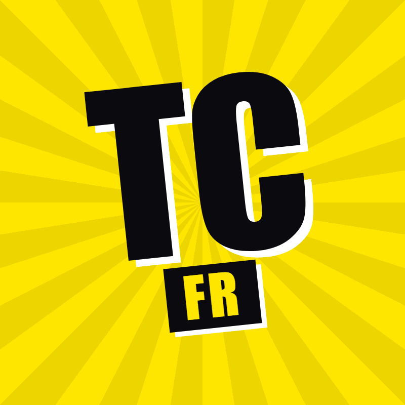

TOP CLIP FR
Les meilleurs moments gaming, en format vertical, chaque jour sur YouTube Shorts, TikTok et Instagram Reels.
L'application TopClipFR
TopClipFR est un outil personnel qui tourne uniquement sur l'ordinateur de son créateur. Il découpe des vidéos longues en clips verticaux, puis les publie sur les comptes TopClipFR via les API officielles (TikTok Content Posting API, YouTube Data API, Instagram API). Il n'est pas proposé au public et ne collecte aucune donnée de tiers.
About the app (English)
TopClipFR is a personal desktop tool used only by the owner of the TopClipFR accounts. It turns long gaming videos into vertical clips and posts them to the owner's own TikTok account through Login Kit and the Content Posting API (Direct Post). It is not offered to other users.
Contact : via les messages privés du compte TikTok ou Instagram @topclipfr.